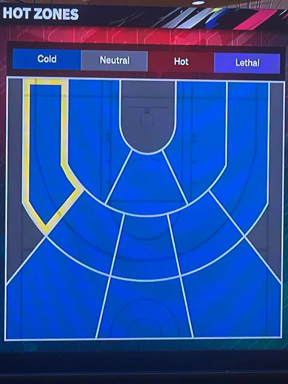

PICK THE PLAYERS. FIND YOUR SPOT.
Your shot. Their defense.
Explore real player shooting records in a first-person, full-court simulation.
Loading player statistics…
Hold Space or the button below to charge.
Checking this browser…
Pick your players before entering. Use trigger/select or look-and-pinch on the in-world buttons. Select the court floor to teleport. Exit VR to change players. Shots still use the statistics-based probability, not throwing velocity. Headset use requires a trusted HTTPS address; a PC localhost address is not accessible as localhost on your headset. Hardware compatibility has not been tested here.
Make it your game
Watch the meter inside the court. Hold Space or the shoot button and release in the green band.
Timing adds up to 10 percentage points or subtracts up to 16. A nearby moving defender can subtract another 2.5 points. Quick shots and VR use no timing bonus. Sounds are synthesized basketball-inspired effects.
Three-point contest moves you through five spots automatically. A shot released before the timer ends counts when it lands.
YOUR PLAYER. EVERY ZONE.
Player hot zones
Quick/excellent values are game estimates at the labeled spot in each zone using your selected pressure. Excellent assumes a perfect 0.85-second release (+10 percentage points, capped at 95%). They exclude the moving defender’s extra close-contest penalty and are not measured NBA release statistics. Makes/attempts and zone colors always show historical records.
Recorded field-goal percentages, with makes/attempts beneath each value. Tap the chart or a zone name to move your shooter. Viewing the defender shows their shooting record, not opponent shooting allowed.
| Zone / move here | FG% | Made/Att | Rating | League FG% | Quick Shot estimate | Excellent Release estimate |
|---|
Custom geometric zones. Cold: at least 5 percentage points below the same-zone league average; Hot: 5–10 points above; Lethal: at least 10 above; otherwise Neutral. Ratings require 20 attempts. *Fewer than 20: raw percentage shown, no hot/cold rating. — means no attempts. Deep/backcourt includes all attempts beyond 35 feet, including those outside this half-court view. These are custom descriptive ratings, not official NBA or video-game ratings. Near-line coordinate classification can be ambiguous.
Your hot-zone image reference

Visual reference supplied by you. Player percentages above are calculated from the shot dataset, not from this picture.
Choose any spot
Click or tap the full court. Dots show the selected shooter's recorded shots. Attack the top basket.
Made Missed Your spot
READ THE SHOT
Above the break
What drives this estimate?
- The shooter's nearby recorded makes and attempts.
- Same-season league location averages and the shooter's 2P or 3P rate, to stabilize small samples.
- A limited defender adjustment based on blocks and steals per 36 minutes, plus your selected pressure.
The animated players are generic 3D avatars with listed heights, jersey numbers and team colors. They are not scans or exact player likenesses.
Your session
| Court zone | Makes | Misses | FG% |
|---|
Player comparison
Choose the two players in the matchup selectors. This compares their historical shooting records side by side.
| Hot zone |
|---|
FG% (makes/attempts). *Fewer than 20 attempts. — means no attempts. These are shooting records, not head-to-head defensive statistics.
TRANSPARENT BY DESIGN
Real records. An estimated matchup.
This independent playground uses external NBA statistics. It is separate from the analyst assignment, whose rules prohibit external data. Do not include this app as part of that submission.
Coverage & source
Source: fuku8/nba-data, a public snapshot collected from NBA statistics. Retrieved September 20, 2026. These are regular-season records, not live rosters. Retired players outside this season are not included.
The probability calculation
Base chance = (nearby makes + 25 × league local rate + 35 × player shot-type rate) / (nearby attempts + 60). A local sample includes shots within 5 feet and the same 2P/3P classification. Recorded shot coordinates are used to classify local attempts as 2P or 3P; positions very close to the line can be ambiguous. The player shot-type rate is smoothed with 30 league-average attempts; the league local rate is smoothed with 50 shot-type-average attempts.
Defense rates are stabilized with 300 league-average minutes. A heuristic modifier uses 0.008 × blocks/36 above league average and 0.003 × steals/36 above league average, capped at ±0.04. It is scaled by pressure (0, 0.7 or 1.3); the pressure setting also adds +0.04, 0 or −0.07. Beyond 35 feet, both the base chance and the adjustment are multiplied by exp(−(distance − 35) / 14). The final probability is limited to 0.01–0.95.
Limits of the data
No exact shooter-versus-defender tracking is available here. Blocks and steals are imperfect defensive proxies, not a measured effect on shooting percentage. The modifier and smoothing choices have not been validated as a predictive model. For shots beyond 35 feet, a clearly labeled exponential distance penalty extrapolates toward a 1% floor; there may be few or no recorded attempts nearby.
Shots are independent random draws. The animation illustrates the result; the hold-and-release meter adds a gameplay timing adjustment, and close contests apply a small extra penalty. There is no foul or free-throw simulation.